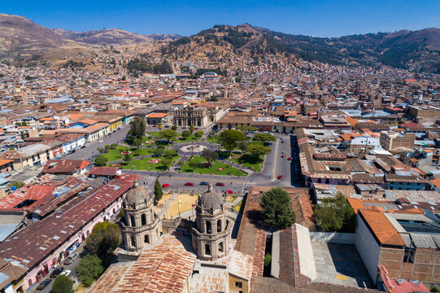
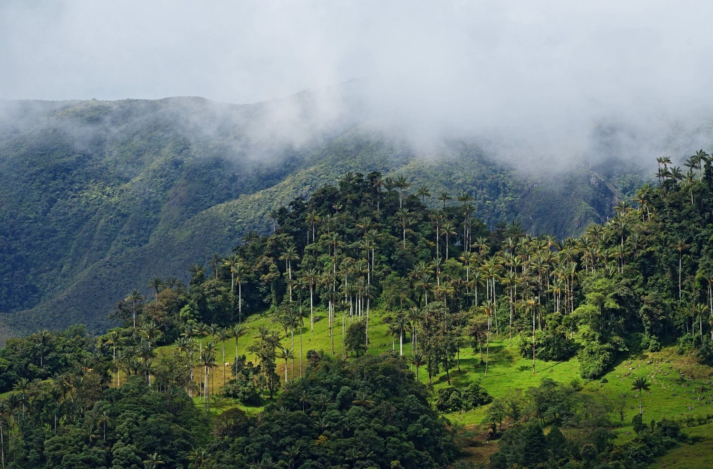
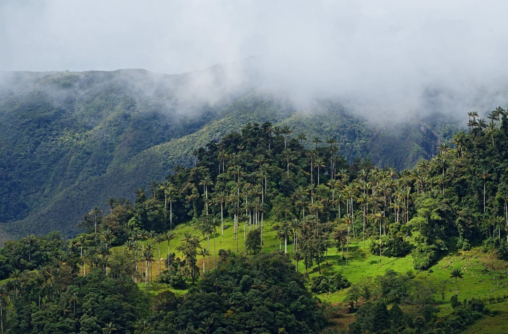

Un Encanto en el Corazón de Perú
Cajamarca te invita a un viaje inolvidable a través de su rica historia, su impresionante geografía y la calidez de su gente. Desde sus antiguas ruinas hasta sus vibrantes mercados, cada rincón cuenta una historia. Prepárate para ser cautivado por la belleza natural y la profunda cultura que este lugar tiene para ofrecer. Sumérgete en sus tradiciones, saborea su gastronomía y déjate llevar por la aventura.
¡Esto es cajamarca!
 
